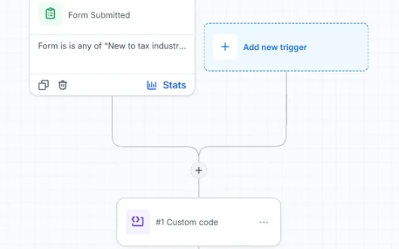
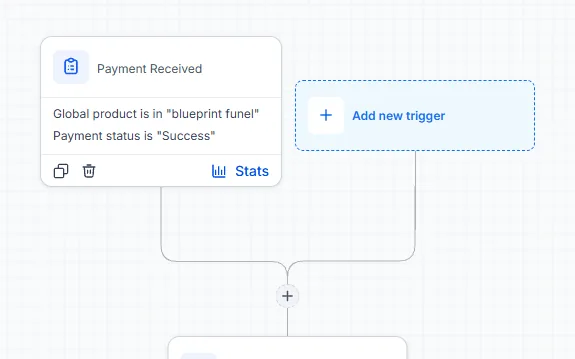

Client work is anonymised. Open any build for the problem, what I built, the tools and the proof.

Referral attribution with Custom Code
GoHighLevel · Custom Code
When every sale had to be credited to the right referrer, I built a lookup-and-onboarding flow so credit, welcome emails and reminders happen automatically.
When card-payment applications stalled with no one chasing them, I built an applications board so agents get stage reminders, expiry alerts and a Monday report automatically.
When meeting notes never turned into tasks, I built a meeting-to-task backend so notes become up to five suggested tasks for review, plus a follow-up draft, automatically.
Goal, current steps, constraints and open questions, agreed before choosing tools.
Build and test in stages
Test contacts first, a check at every step, and a backup before any clean-up.
Hand it over
Decisions and status recorded, plus a guide or checklist for running the workflow.
Capturesource + consent
Routetags + logic
Follow upuntil they book or pay
An example of what I build: every enquiry is captured, routed and followed up until it books, then the team is told.
What I can build
GHL automation
Workflows that follow up so your team doesn't have to.
CRM and pipelines
Pipelines, tags and fields your team can actually use.
Funnels and pages
Lead magnet, webinar, application and sales funnels, built with AI and checked by hand.
Integrations and AI steps
GHL connected with the rest of your stack, with AI steps a person reviews.
Notion workspaces and AI agents
A company hub where meetings turn into tasks on their own.
Custom tools and walkthrough videos
Small tools built with AI-assisted coding, and how-to videos your team will watch.
Hi, I'm Henry Jake.
I'm an automation specialist, and GoHighLevel is my core skill (5+ years): workflows, CRM pipelines and funnels for agencies, coaches, real estate and service businesses. I'm also trained as a digital marketing assistant, so I build the automation around the campaign: lead magnet, webinar, application or sales funnel, not just the tech spec. I also run n8n, Notion and Claude-powered steps in live client systems. Every build is documented so your team can take it over.
Skills by depth
GoHighLevel automationCore
Workflow automation and troubleshooting
Email and SMS follow-up, nurture
CRM pipelines and opportunities
Contact clean-up, segmentation, migrations
Funnels, forms, payment-triggered workflows
JavaScript Custom Code steps
APIs, webhooks, Private Integrations
Custom fields and values
Chatbots and Voice AI agents
n8nApplied
Meeting-note capture
Task extraction for human review
Follow-up drafts for approval
Notion API connections
Error workflows and spend alerts
NotionApplied
Company hubs
Task, project and meeting databases
Self-updating status boxes (via n8n)
How-to pages for the team
Claude and AI agentsApplied
Claude API steps with structured output
A Notion AI agent for weekly reviews
GHL chatbot and Voice AI agents
Human review before anything is sent
AI-assisted codingApplied to small tools
FlowSnap (Chrome extension)
Perator (Android app)
This site and 3 demos
Knowledge OS (my agent system)
Process and handoffSupporting
Process mapping and system diagrams
Staged testing with test contacts
Runbooks, SOPs and handoff docs
Walkthrough videos
Digital marketingSupporting
Funnel strategy: lead magnet, webinar, application and sales funnels
My own AI workspace, shown with demo data: how I organise and check my work, not a client result.
Experience
Sep 2026 – presentAutomation Specialist (contract) · Australian retail-media consultancy
Oct 2026 – presentGHL project work · Australian digital agency
2026GHL project work · payments reseller, tax-professional training program
Jan – Mar 2026GHL Specialist / Workflow Automation VA · Azulio.ai
Aug 2025 – Jan 2026VA / Digital Marketing Assistant · Outsourced Doers
Nov 2023 – Feb 2025Virtual Assistant · DojoMax
Mar – Jul 2023Virtual Assistant · White Label Ads Factory
Feb 2020 – Feb 2023Virtual Assistant · RC Digital Consultancy
Got a process that should run itself?
Looking for a full-time remote automation role at agency level; also open to part-time and project work. Tell me what happens today and what you wish happened instead.
Every $19 sale of a paid training program had to be credited to the right referrer, each new member needed their own onboarding code, and reminders had to stop as soon as someone paid.
What the build shows
Landing page: a paid-program page with an earnings calculator and a $19 checkout form.
Referrer lookup: in the onboarding workflow, one Custom Code step finds the right referrer from a lookup table and saves it on the contact.
Onboarding code: the same workflow generates each member's own onboarding and referral code, tags them and notifies the team.
Payment received: a second workflow swaps the tags, sends the welcome email and notifies the team.
Reminders that stop: a "wait until condition met" step holds the reminders and ends them the moment the payment lands.

The payment-received workflow: tag swap, welcome email and team alerts follow this trigger.The paid-program landing page the checkout sits on.
Card-payment applications sat with the payment provider for weeks with no one chasing the missing step, links expired unnoticed, and the only status list was a weekly spreadsheet.
What I built
Intake: an agent logs a new application on an internal form; a workflow opens its card on the board and assigns the owner.
Board: a separate applications pipeline with one column per thing the merchant still owes, so applications and terminal deals never mix.
Stage reminders: four reminder workflows, one per waiting stage, in business hours only: a task for the sales agent, re-checks after 3 and 7 business days, then an email to the manager.
Expiry alerts: alerts on day 25, 30 and 38, counted from the day the link was sent, each only if the application is still open; approved applications are tagged for commission.
Weekly update: the provider's weekly report becomes a CSV import, and a Monday report summarises the board.
One of four stage reminders: a task, two re-checks, then the manager is emailed if the card is still stuck.Expiry alerts counted from the link date, tested with short 1, 2 and 3-day offsets.
Tools
GoHighLevel pipelines, custom fields, workflows (Build using AI plus hand fixes), wait-until-date steps, internal forms, scheduled reports and CSV import, with a spreadsheet reconciliation workbook.
Built and tested on test contacts, awaiting the client's go-live. The Monday report schedule is live and sent internally. No time savings are claimed.
Problem
Meetings produced notes, but nobody turned them into tasks, so actions were forgotten. The first AI setup ran on Notion AI credits, and the 300 credits a month ran out in 5 days.
What I built
Meeting booked: an hourly check on the calendar creates the Notion meeting page before the call.
Notes captured: n8n spots the new notes file, skips anything already captured and copies it to a Meetings folder in Drive.
Notion meeting page: a second workflow finds that page (or creates it), writes the notes in and marks it Summarised.
Claude follow-up and tasks: Claude writes a follow-up draft into the page, or marks it Not needed, and suggests at most 5 real commitments, checked against open tasks.
Human review: new tasks arrive as "Needs review" and only count once a person approves them. The follow-up stays a draft.
Around it: flagged emails become review tasks, the hub's status boxes rewrite themselves three times each weekday, a Notion agent writes the Friday review, any failed workflow creates a Notion task, and a spend watch logs every Claude call. A handover pack of 8 runbooks lets the client run it without me.
The Notion company hub: one front door to every business function.A test meeting after the workflow ran: three linked tasks, all waiting for review.
Tools
n8n, Notion, the Claude API, Google Drive and Gmail.
10 live n8n workflows, each with a plain-English runbook. Measured Claude cost: US$0.0044 per meeting for task suggestions. Time saved: not measured. Built but parked: expense to Xero draft bills, waiting on the Xero app. No time savings are claimed.